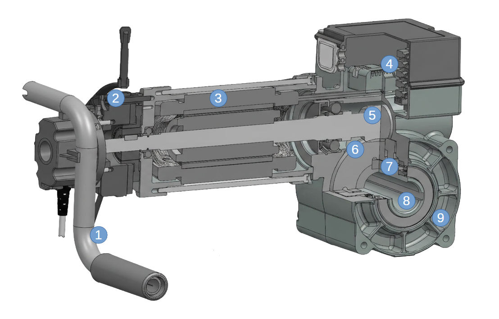

Wysoka prędkość
Prędkość obrotowa 130 obr/min pozwala na uzyskanie dużej prędkości płaszcza bramy.
Napęd nasadowy do bram szybkobieżnych z PVC.
Napęd wyposażony w eletrohamulec i zintegrowany system zabezpieczenia mechanicznego przed opadnięciem płaszcza bramy. Wysoki moment obrotowy 60 Nm, prędkość 130 obr/min, intensywność użytkowania do 45 cykli/godz, obsługa awaryjna na korbę.

Uniwersalny napęd do bram szybkobieżnych o bardzo wysokich parametrach technicznych i wytrzymałościowych. Wyposażony w elektrohamulec i moduł do obsługi awaryjnej za pomocą korby. Przekładnia pracująca w kąpieli olejowej posiada specjalne koło zębate ze zintegrowanym systemem zabezpieczenia przed opadnięciem płaszcza bramy. Możliwość zasilania 3x 400V lub 3x230V za pomocą centrali z inwerterem.
Prędkość obrotowa 130 obr/min pozwala na uzyskanie dużej prędkości płaszcza bramy.
Wbudowany system zabezpieczający przed samoistnym opadnięciem płaszcza bramy.
Napęd dostępny dla trzech wymiarów wału 25/25,4/30 mm.
Poniższy przekrój pokazuje najważniejsze elementy budowy napędu BBS 60130RME. Ich właściwy dobór gwarantuje niezawodną pracę napędu w warunkach intensywnego użytkowania.

Mechanizm do obsługi awaryjnej bramy za pomocą korby.
Blokuje pracę przekładni w momencie jej zatrzymania.
Odpowiada za napęd elektryczny przekładni głównej napędu.
Monitoruje ruch obrotowy siłownika i pozwala na określenie pozycji bramy.
Przenosi ruch obrotowy z silnika na główne koło zębate.
Redukuje prędkość obrotową silnika i przenosi moment obrotowy na wał.
System zabezpieczający przed samoistnym opadnięciem płaszcza bramy.
Punkt przeniesienia momentu obrotowego z napędu na wał bramy.
Chroni i utrzymuje elementy przekładni pracujące w kąpieli olejowej.
| Zasilanie | 3~ 400V / 230V |
|---|---|
| Moc mechaniczna | 1,0 kW |
| Moment obrotowy | 60 Nm |
| Prędkość | 130 obr/min |
| Średnica wału | 25/25,4/30 mm |
| Limit obrotów wału | 18 obr |
| Intensywność pracy | 45 cykli/godz |
| Klasa ochrony | IP54 |
| Temperatura pracy | -20 / +60°C |
Przekaż nam podstawowe informacje o bramie i sposobie użytkowania. Doradca Cezab Distribution pomoże potwierdzić konfigurację oraz przygotuje ofertę.